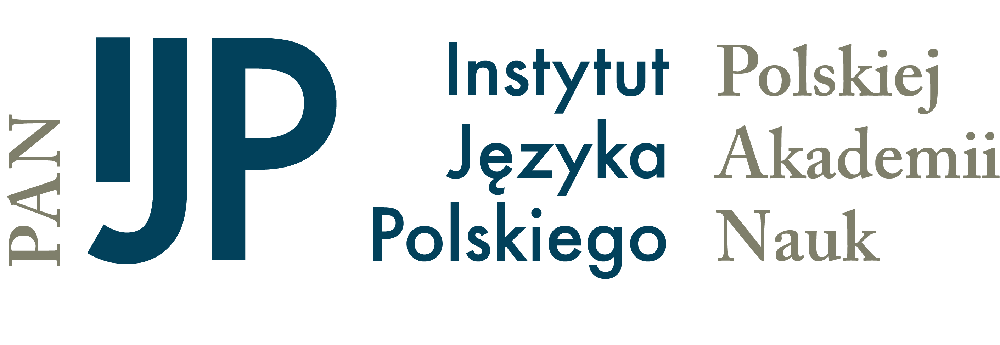
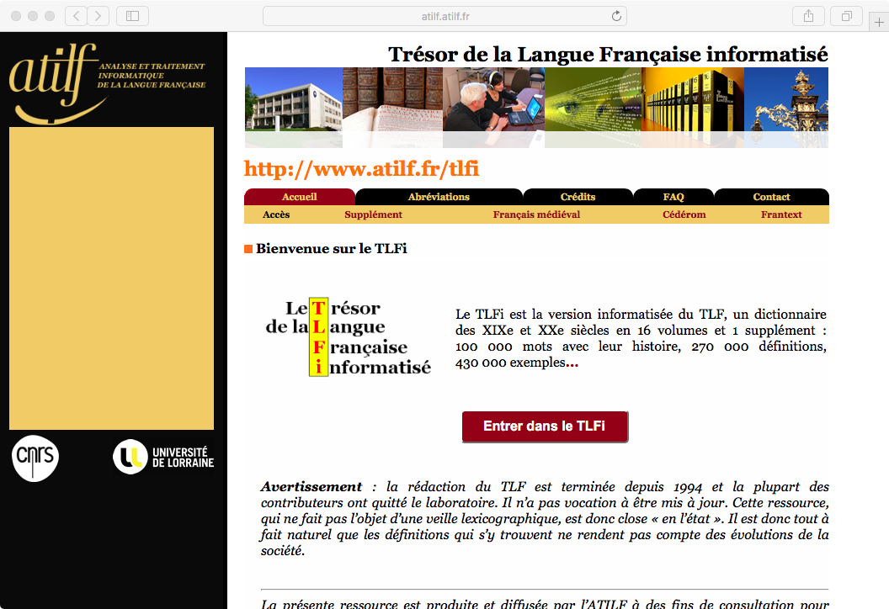
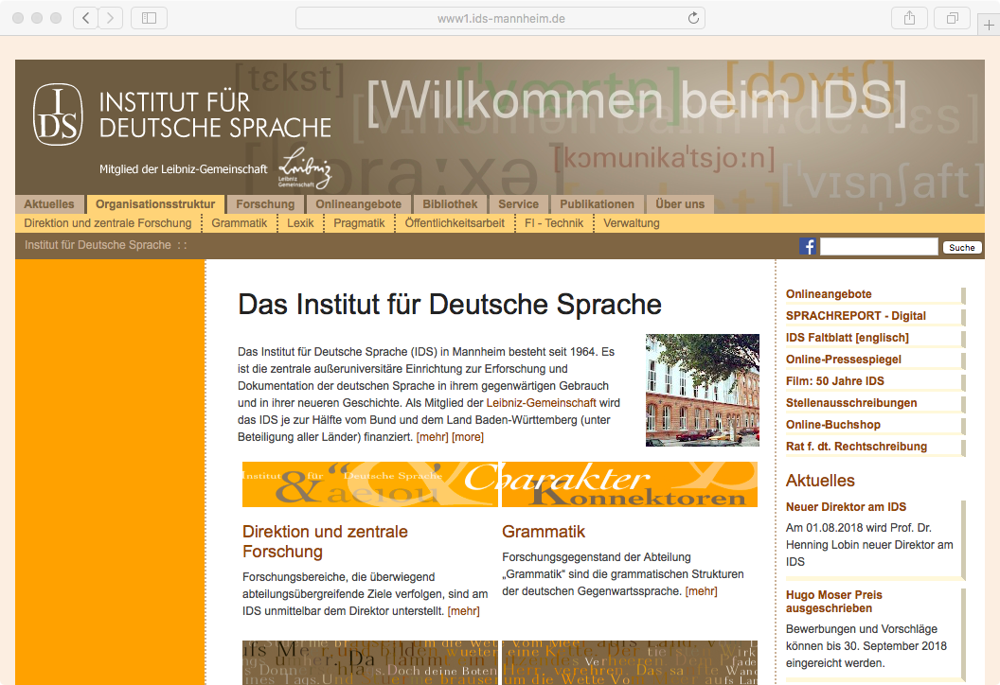
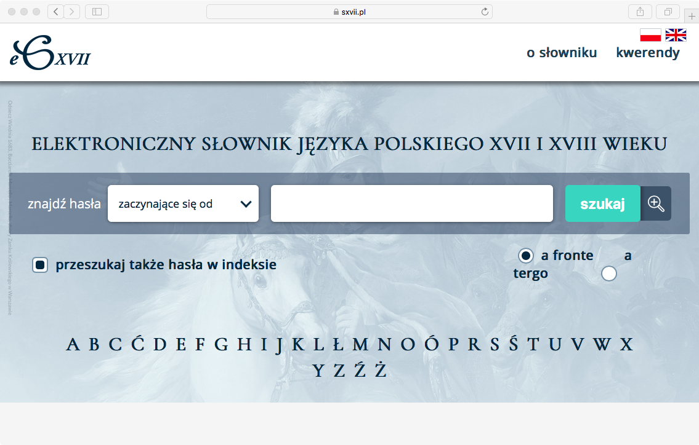
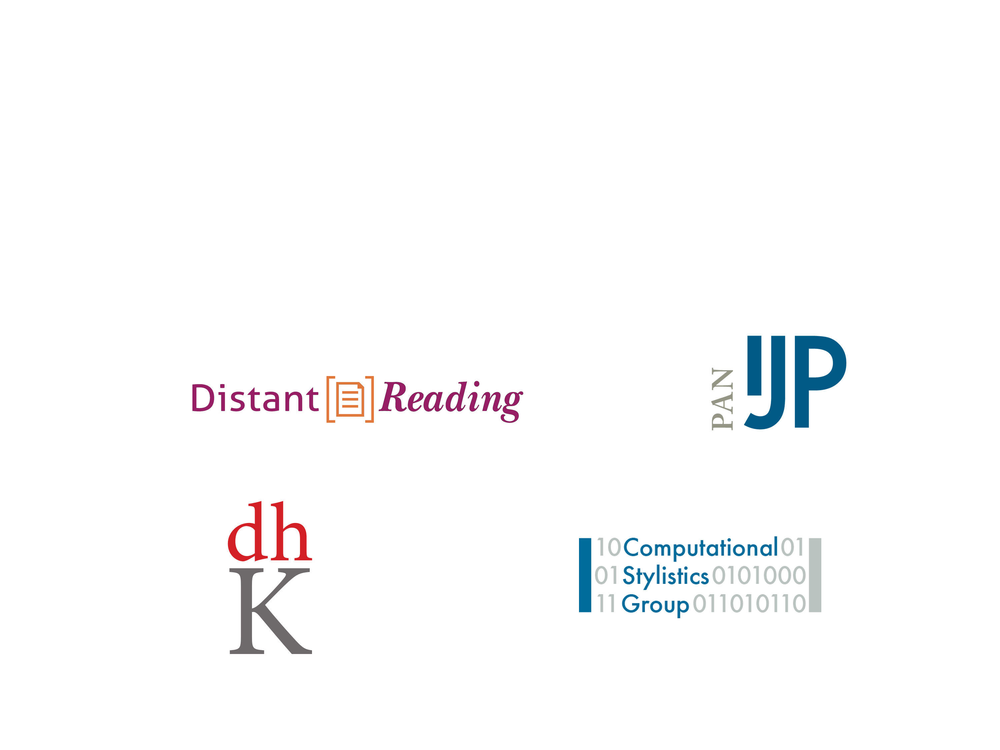

Przyszłość Polskiej Akademii Nauk i jej instytutów badawczych
Maciej Eder
Problemy instytutów humanistycznych
Maciej Eder (Instytut Języka Polskiego PAN)

Będlewo, 14 VII 2018
Wieloletnie prace zbiorowe
- Instytut Historii im. Tadeusza Manteuffla PAN
- Polski słownik biograficzny
- Słownik historyczno-geograficzny ziem polskich
- Bibliografia historii polskiej
- Instytut Języka Polskiego PAN
- Słownik polszczyzny XVI wieku
- Polska bibliografia literacka
- Instytut Slawistyki PAN
- etc. etc. etc.
Wieloletnie prace zbiorowe
- Instytut Języka Polskiego PAN
- Słownik staropolski
- Wielki Słownik Języka Polskiego
- Słownik polszczyzny XVII i XVIII wieku
- Słownik łaciny średniowiecznej w Polsce
- Słownik gwar polskich
- Słownik gwar Mazur i Ostródzkiego
- Słownik staropolskich nazw osobowych
- Słownik pojęciowy języka staropolskiego
- Ogólnosłowiański Atlas Językowy
- Atlas Języków Europy
Thesaurus Linguae Latinae (1893!)

Staročeský slovník

Middelnederlands woordenboek

Svenska Akademiens ordbok

Trésor de la Langue Française

BBAW – 32 (!) słowniki i korpusy

Das Institut für Deutsche Sprache

A ile za to dają punktów?
SXVII: ofiara własnego sukcesu

WSJP: kamień młyński u szyi IJP PAN (?)

Czy Polacy zasługują na słowniki?
Sukces czy strzał do cudzej tarczy?

Powód do dumy?
Indogermanische Forschungen (IF 0.189)
Literary and Linguistic Computing (IF 0.460)
Digital Scholarship in the Humanities (IF 0.715)
R Journal (IF 1.55)
Scientific Reports (IF 4.609)
Mississippi Quarterly (0 kudryków)
Humanistyka cyfrowa w instytutach PAN
